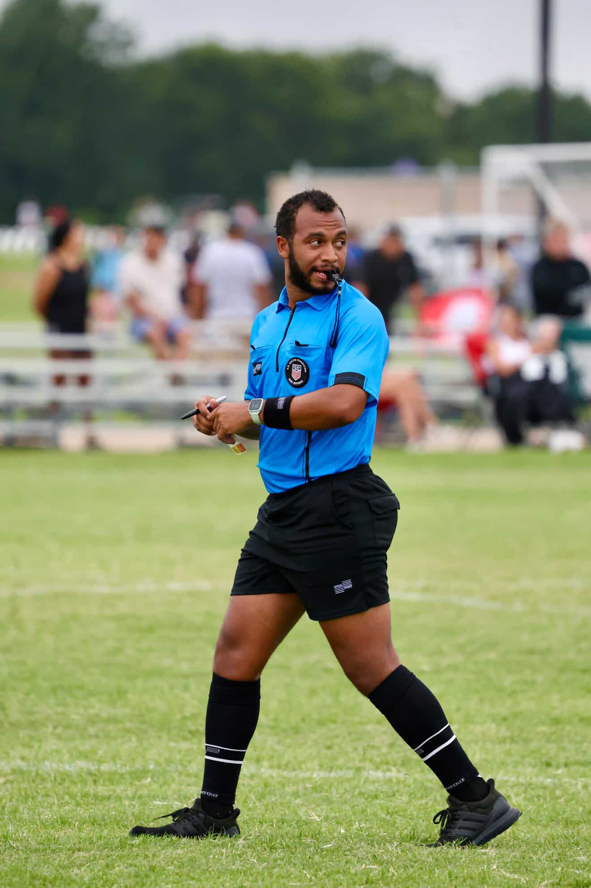

Dewain Lindo

Summary
Aspiring front-end developer transitioning from diverse industries and
competitive soccer, bringing strong teamwork, adaptability, and a growing
skill set in HTML, CSS, JavaScript, and React.
Education
-
General Studies - Hesston College 2017
- General Studies - Lonestar Community College
Work Experience
-
Team Member - Sweetgreen
January 2025 - Current
-
Delivered prompt, accurate service in a fast-paced, high-volume
restaurant setting.
-
Maintained food safety and cleanliness standards during prep and
service.
-
Collaborated with team members to ensure smooth operations and
customer satisfaction.
-
Soccer Referee
August 2024 - Current
-
Officiated competitive youth regional and adult amateur matches with
consistent rule enforcement.
-
Managed high-pressure situations and on-field disputes with clear
communication.
-
Demonstrated leadership and composure while promoting fair play and
safety.
-
Onshore Tankerman
June 2022 - July 2024
-
Supervised safe transfer of petroleum products, following strict
safety protocols.
-
Conducted inspections and maintained compliance with environmental
regulations.
-
Coordinated closely with barge and terminal crews to ensure smooth
operations.
Skills
-
From the Kitchen (Sweetgreen):
- Fast, detail-oriented execution
- Team collaboration & time management
- Process-driven workflows
-
From the Pitch (Referee):
- Confident decision-making under pressure
- Clear, real-time communication
- Conflict resolution & rule-based thinking
-
From the Boats (Tankerman):
- Precision in high-stakes tasks
- Safety & compliance awareness
- Coordinated team operations
-
Now in Tech:
- HTML, CSS, JavaScript, React
- Git & version control
- Responsive design & accessibility
Certifications
- USSF Soccer Referee
-
The Complete Full-Stack Web Development Bootcamp - Dr. Angela Yu (Udemy)
Other
Contact info
- Tel: 832-675-xxxx
- Email:Dewainxx@gmail.com
Work
Git